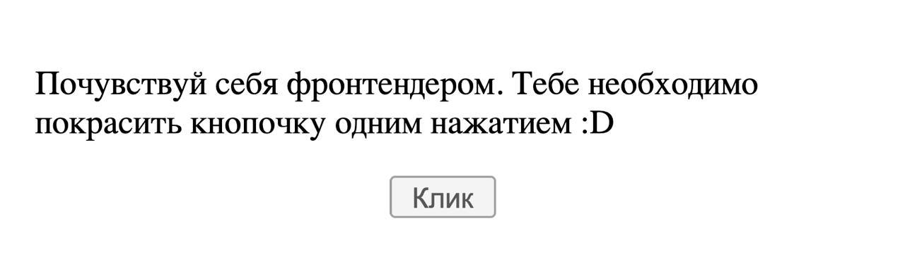
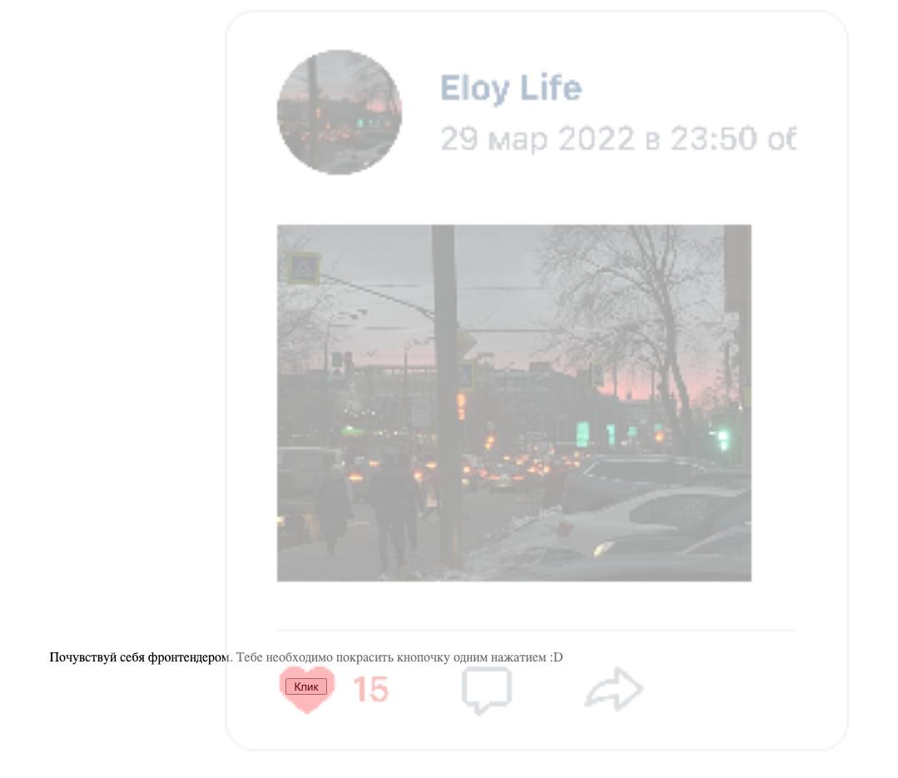

Загрузка интерактивного эксперимента...
Перед тобой особенная кнопка! Попробуй нажать на неё и посмотри, что произойдет.
Ты только что поставил(а) лайк моей аватарке ВКонтакте! 👍
Это демонстрация атаки "Clickjacking" или "обман кликов":
Таким образом, злоумышленники могут заставить пользователей совершать действия на других сайтах, не получая их согласия.


Будьте внимательны к сайтам, которые вы посещаете, и кнопкам, на которые нажимаете!